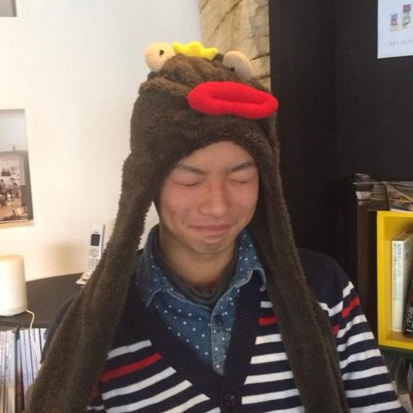
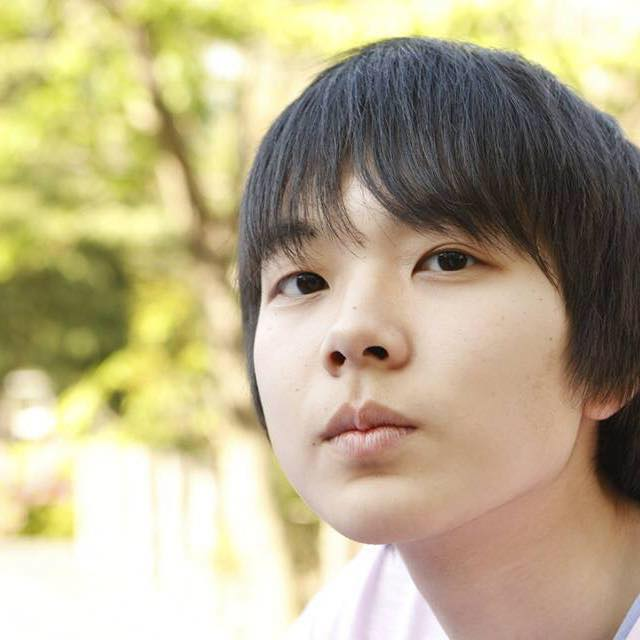
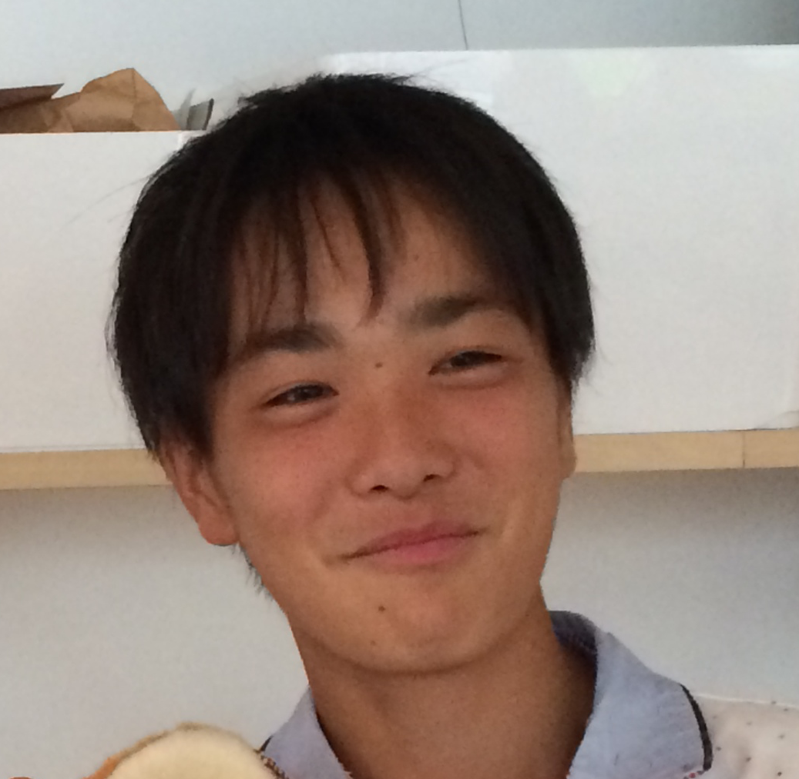

CoderDojoとは？
小中学生向けのプログラミング道場です。もともとアイルランドから始まったムーブメントで、現在では39カ国で354もの道場が開かれています。
また、国内にも21の道場が定期的に活動をしています。使用している教材は、米国マサチューセッツ工科大学が開発した教育用プログラミングツールScratchです。
タイピングはせず、マウスを使ってブロックを組み合わせることでプログラミングをすることができます。
CoderDojoの一覧を見る
CoderDojo kashiwa-no-haの特徴
Kashiwa-no-haの運営は高校生を中心に、プロのプログラマも交えて運営されています。高校生らしい斬新なアイディアやワークショップをやっていきたいと思っています。
また場所は国内最大級のコワーキングスペース「KOIL」という場所です。
KOILの特徴は、空間だけでなくイノベーションを生み出すコミュニティが用意されていることです。また大手企業、ベンチャー企業、そしてクリエイターや生活者などの個人も含めて相互に交流を生み出す多彩なイベントを開催し、イノベーションの化学反応を起こしてくことを考えられた施設です。
当DojoはCoderDojoKashiwaと姉妹Dojoの関係です。興味がある方はCoderDojoKashiwaのページにも訪れてみて下さい。
Kashiwa-no-ha Dojoのメンター
 |  |  |  | |||||
| 宮島衣瑛 | 加藤遼 | 飯島巧 | 高松基広 | 間下知紀 | 竹内遥斗 | 村脇光洋 | 相良亮 | 福田敏史 |